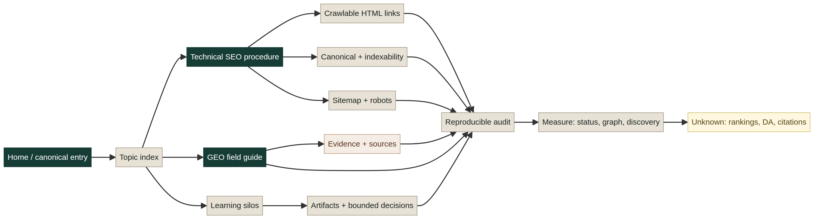

This is the field record of what we built. AI Mastery started as a static learning platform. We turned it into a connected, machine-readable system for technical SEO, generative engine optimization (GEO), agent trust, and evidence-led learning. The work was not a promise to “hack” rankings. It was a controlled attempt to make each important page understandable, reachable, attributable, and honest about what the evidence does not show.

Scope boundary. “GEO” here means making a source-led entity and knowledge system easier for search engines and answer systems to discover, interpret, attribute, and revisit. It does not mean guaranteed inclusion in an AI answer, a ranking promise, or a claim that a structured record is true merely because it is structured.
The question we were actually solving
The useful question was not “How do we add more keywords?” It was: Can a stranger, a crawler, or an answer system follow the same path from the home page to a relevant claim, its source, its limits, and the next useful action? That question produced a better architecture than a list of isolated optimization tasks.
The implementation had four audiences at once. A person needed orientation and a satisfying next step. A crawler needed ordinary links and stable URLs. An answer system needed explicit entities, source context, and machine-readable discovery. A future maintainer needed a portable method that did not depend on a proprietary backend or hidden state.
What we built
| Layer | Implementation | Why it matters |
|---|---|---|
| Content architecture | Knowledge Index, connected learning paths, AURE’s 16 silos, self-audit, and a public field guide. | Creates topical relationships and gives each page a reader job. |
| Route graph | Home, hubs, directory, lessons, evidence records, and reciprocal next-step links. | Reduces dead ends and makes important pages discoverable through normal navigation. |
| Technical layer | Absolute canonicals, indexable robots directives, sitemap parity, JSON-LD, Open Graph, and descriptive anchors. | States the preferred URL and page meaning in inspectable HTML. |
| Evidence layer | Source shelves, claim boundaries, unknowns, provenance notes, and a public implementation audit. | Separates fact from interpretation, framework, and promise. |
| Maintenance layer | Zero-dependency Node audits, README procedure, internal-link policy, and release checklists. | Turns one successful pass into a repeatable operating practice. |
The technical SEO procedure
1. Start with a route manifest
Before writing metadata, enumerate the pages that deserve to exist. Assign each one a stable path, canonical URL, title, description, purpose, publication state, and parent hub. The same manifest should drive the sitemap, directory, machine-readable index, and audit. This prevents a common failure mode: a page exists in the filesystem but not in the user journey.
2. Use normal crawlable internal links
Every intentional internal link uses an ordinary anchor with an href. Google’s guidance says it can generally crawl an anchor link when it has an href, and recommends descriptive anchor text and contextual internal cross-references [1]. We use no rel="nofollow", ugc, or sponsored on normal internal navigation. There is no need to add a nonstandard rel="dofollow" label; the absence of restrictive attributes is the normal followable state.
<a href="/aure/evidence-and-claim-boundaries/">
Evidence and claim boundaries
</a>The anchor should describe the destination, make sense out of context, and appear where it resolves a real reader question. A footer can reinforce discovery, but a high-value lesson should not be connected only through a generic footer or directory link.
3. Build hubs and spokes, not a link pile
A hub introduces a domain and its system question. A supporting lesson handles a narrower question. The supporting page links back to the hub, to a relevant method or evidence record, and forward to the next decision. The hub links to the supporting page with context. We do not manufacture link volume or repeat the same keyword anchor everywhere.
4. Keep canonical and discovery signals consistent
Each public page has an absolute self-referential canonical, and internal links point to the same preferred URL. The sitemap contains the same canonical public routes. Google describes redirects and rel="canonical" as stronger canonicalization signals than sitemap inclusion, while sitemap inclusion is useful as a discovery and preference signal [2].
5. Keep robots.txt permissive for intended public content
The live policy is deliberately simple:
User-agent: *
Allow: /
Sitemap: https://virtualmase.github.io/ai-mastery/sitemap.xmlA robots file is a crawl instruction, not a canonicalization mechanism. We do not use it to hide duplicate content while expecting search engines to understand the preferred version.
6. Add structured data that the page can support
JSON-LD clarifies what a page is: a course, learning resource, article, collection, organization, or website. It must describe visible, accurate content. We do not add ratings, testimonials, certifications, commercial results, or other fields merely because a schema type permits them. Structure improves interpretation; it does not prove truth.
How this rewrites the GEO playbook
Many GEO discussions start at the answer layer: prompts, mentions, citations, or visibility screenshots. Our method starts earlier. An answer system can only work with the public record it can find and interpret. That record needs a canonical identity, stable relationships, source context, recency signals, and boundaries around uncertainty.
That produces five GEO questions for every important page:
- Entity: Who or what is this page about, and where is the canonical record?
- Relationship: What parent topic, adjacent concept, standard, product, or evidence record does it connect to?
- Attribution: Which claims are sourced, and can a reader inspect the source?
- Currency: When was the page changed, and what could decay or become stale?
- Boundary: What does the page explicitly not establish?
This approach treats GEO as a maintenance discipline for public knowledge, not as a promise of favorable machine-generated answers. The Machine-Readable Internet lessons and Trust Infrastructure pathway provide the deeper learning sequence.
How we audited the system
We wrote two zero-dependency Node scripts. The live route audit enumerates the 50 HTML routes, fetches their public URLs, resolves internal targets, calculates click depth from home, checks titles, descriptions, canonicals, robots, Open Graph, JSON-LD, image alt text, sitemap parity, and route status. The internal-link policy audit scans every anchor for restricted internal attributes, JavaScript-only destinations, and unintended noindex directives.
| Observed result | Count | Interpretation |
|---|---|---|
| Live HTML routes | 50 / 50 | All audited routes returned HTTP 200. |
| Broken internal page links | 0 | No invalid page destinations in the audited graph. |
| Orphan routes | 0 | Every route is reachable from the home graph. |
| Routes beyond two clicks | 0 | Every audited route is within the chosen discovery depth. |
| Restricted internal links | 0 | No internal nofollow, ugc, or sponsored attributes. |
| Sitemap gaps | 0 | The sitemap matches the 50-route manifest. |
These are structural observations from a dated audit. They do not demonstrate rankings, citations, traffic, conversions, a Moz Domain Authority score, or inclusion in an AI answer.
The portable implementation
The first version can run on a plain static server. Content records are JSON. The page shell is ordinary HTML. The renderer is a small Node script. The audit scripts use built-in runtime features. A future CMS, API, or static-site generator can replace the content source without changing the information model or the release gates.
The project’s reusable procedure is documented in the technical SEO operating procedure and the internal-link policy. The headless template demo shows the smallest working version of this approach.
What we would do differently
We would design the authority graph and visual system before launching a large set of routes. We would treat the all-pages directory, sitemap, and machine-readable index as one generated surface from the beginning. We would run desktop and mobile UX checks before adding more navigation controls. We would also separate live Search Console and backlink measurement from local technical checks earlier in the process.
The important correction is methodological: speed is not the same as progress. A page that is technically present but visually confusing, weakly linked, stale, or unsupported by evidence is not a finished SEO asset. It is an unresolved system state.
How to adopt the method
Start with one property and one route manifest. Pick the canonical hostname and path prefix. Define the home-to-hub-to-page graph. Make every important link an ordinary descriptive anchor. Add self-canonicals, permissive robots directives for intended public content, a sitemap of canonical routes, honest JSON-LD, and source-linked claims. Then run the two audit scripts before release and save the JSON evidence with the commit.
Coreweaver operating rule: plain, direct, true. Facts have sources. Interpretations are labeled. Frameworks have scope. Outcomes are measured or marked unknown. No technical SEO field is allowed to smuggle in a promise.
Sources and further reading
- Google Search Central: Link best practices for Google — crawlable anchors, descriptive anchor text, internal links, and outbound-link qualification.
- Google Search Central: How to specify a canonical URL — canonical signals, redirects, sitemap consistency, and self-referential canonicals.
- Google Search Central: Learn about sitemaps — sitemap discovery and its limits.
- Google Search Central: Creating helpful, reliable, people-first content — original value, sourcing, and avoiding search-first content production.
- Moz: What Is Link Equity? — relevance, authority, crawlability, placement, and the limits of internal link sculpting.